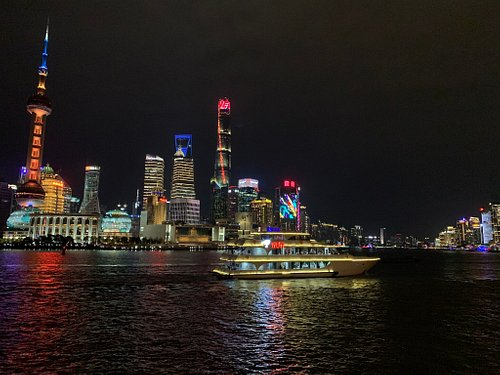
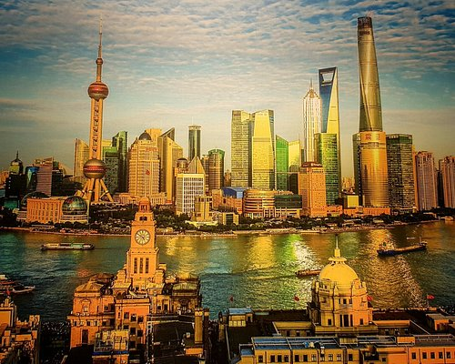
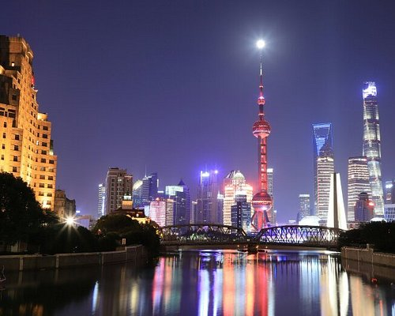
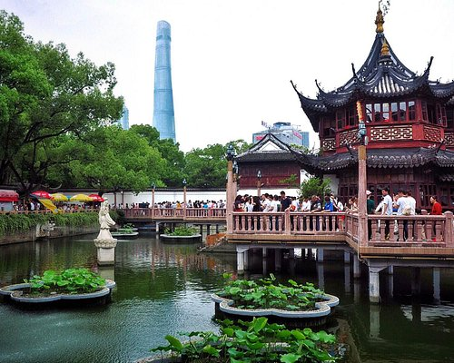
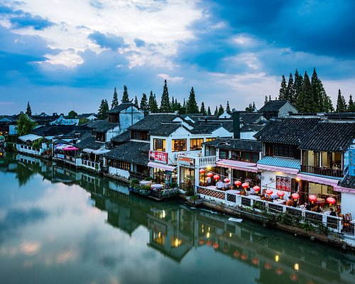

Attraction

The Bund
The Bund or Waitan is a waterfront area and a protected historical district in central Shanghai. The area centers on a section of Zhongshan Road (East Zhongshan Road No.1) within the former Shanghai International Settlement, which runs along the western bank of the Huangpu River in the eastern part of Huangpu District. The area along the river faces the modern skyscrapers of Lujiazui in the Pudong District.

Shanghai Tower
Shanghai Tower is a 128-story, 632-meter-tall (2,073 ft) megatall skyscraper in Lujiazui, Pudong, Shanghai.[10] It is the world's third-tallest building by height to architectural top and it shares the record (along with the Ping An Finance Center) of having the world's highest observation deck within a building or structure at 562 m.

Oriental Pearl Radio
The Oriental Pearl Radio is a TV tower in Shanghai. Its location at the tip of Lujiazui in the Pudong New Area by the side of Huangpu River, opposite The Bund, makes it a distinct landmark in the area. Its principal designers were Jiang Huan Chen, Lin Benlin, and Zhang Xiulin. Construction began in 1991, and the tower was completed in 1994.

Yu Garden
Yu Garden is an extensive Chinese garden located beside the City God Temple in the northeast of the Old City of Shanghai at Huangpu District, Shanghai. It abuts the Yuyuan Tourist Mart, the Huxinting Teahouse and the Yu Garden Bazaar.
This garden is accessible from the Shanghai Metro's Line 10 and Line 14 Yuyuan Garden station.

Zhujiajiao
Zhujiajiao is an ancient town located in the Qingpu District of Shanghai. The population of Zhujiajiao is 60,000.Zhujiajiao is a water town on the outskirts of Shanghai, and was established about 1,700 years ago. Archaeological findings dating back 5,000 years have also been found. 36 stone bridges and numerous rivers line Zhujiajiao, and many ancient buildings still line the riverbanks today.
SHANGHAI